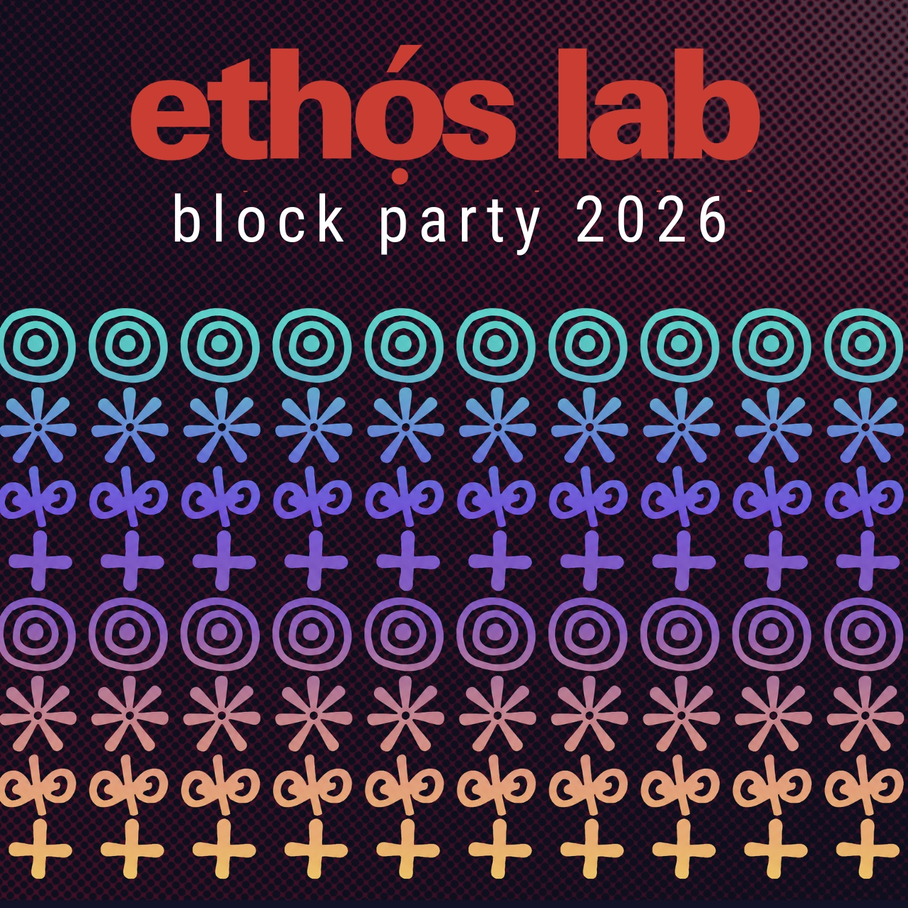
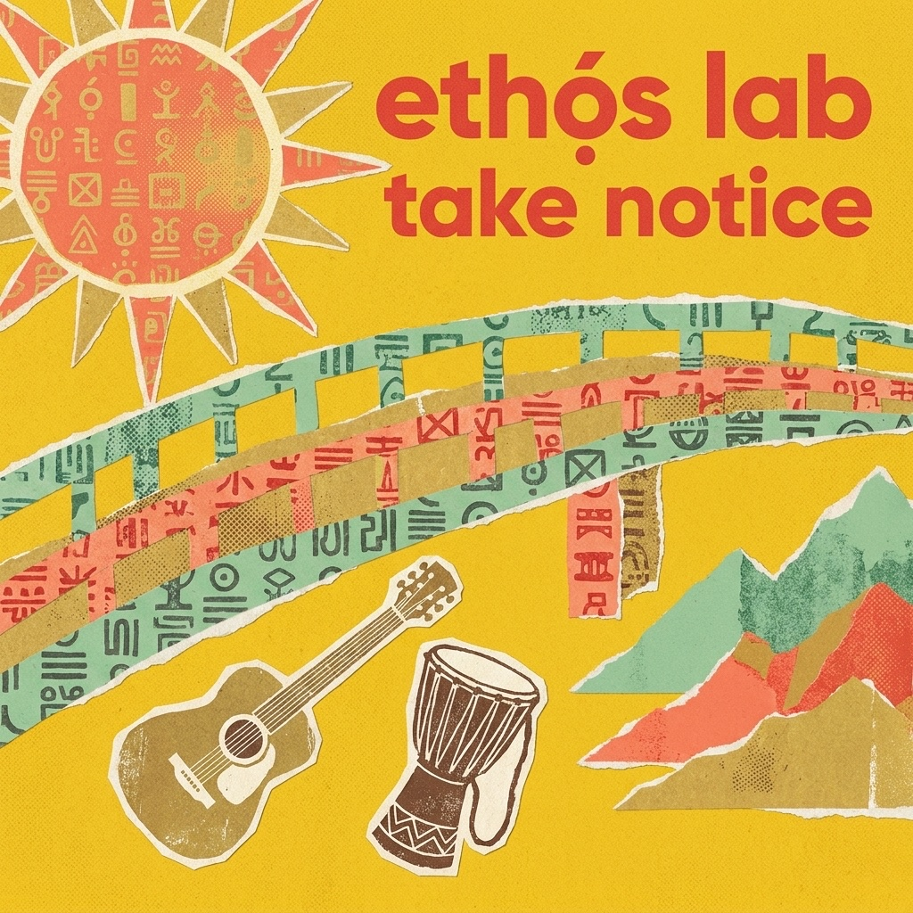
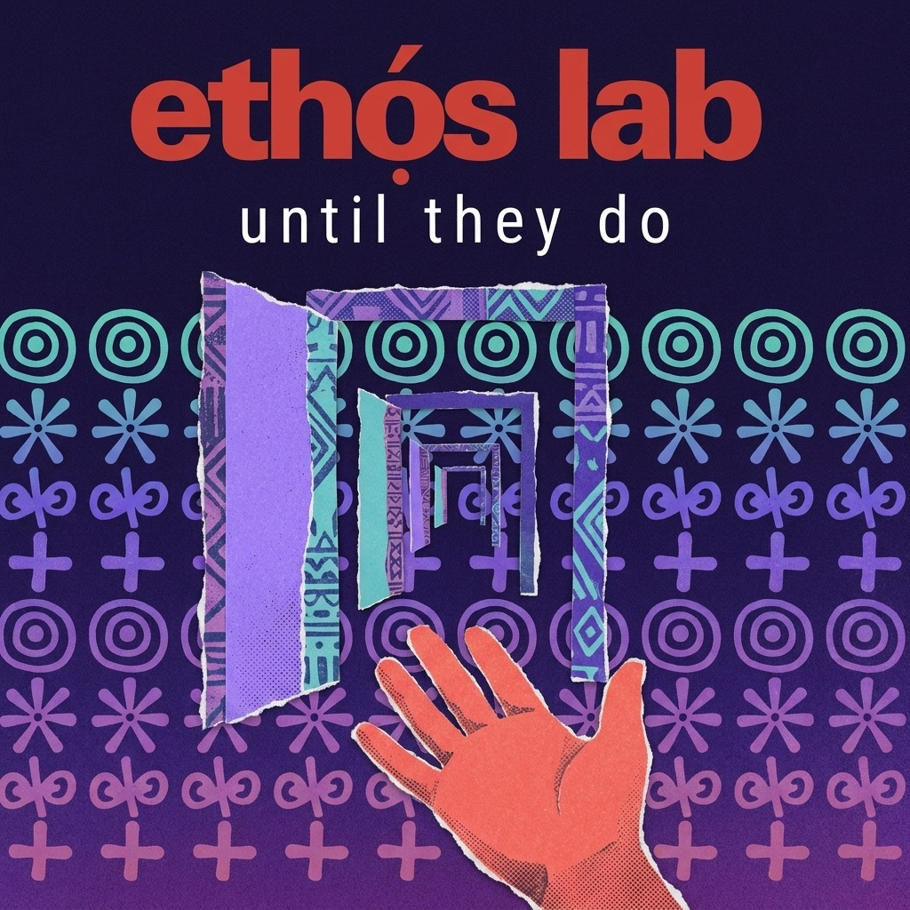
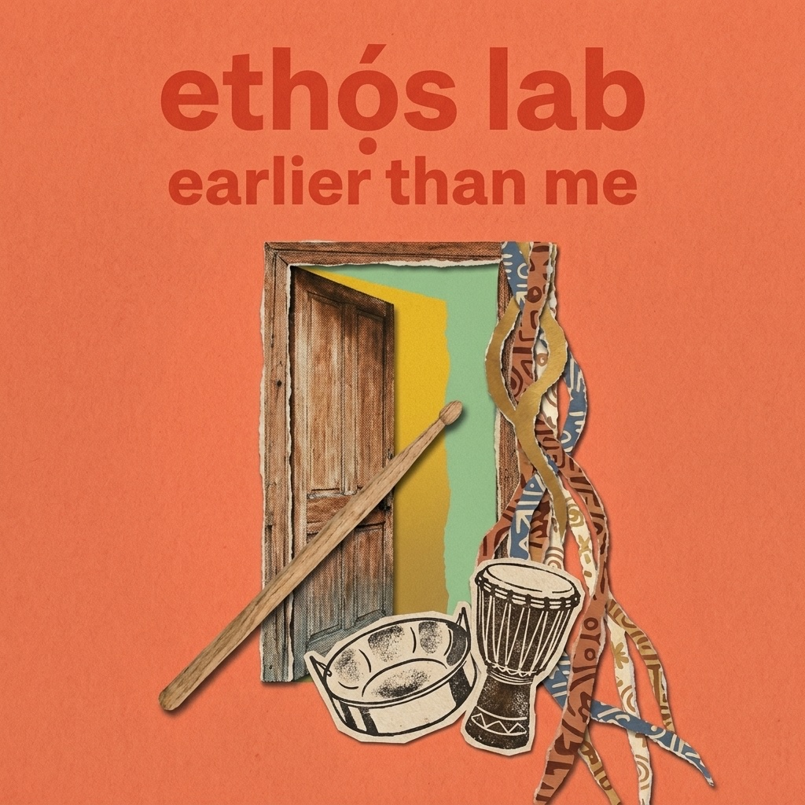
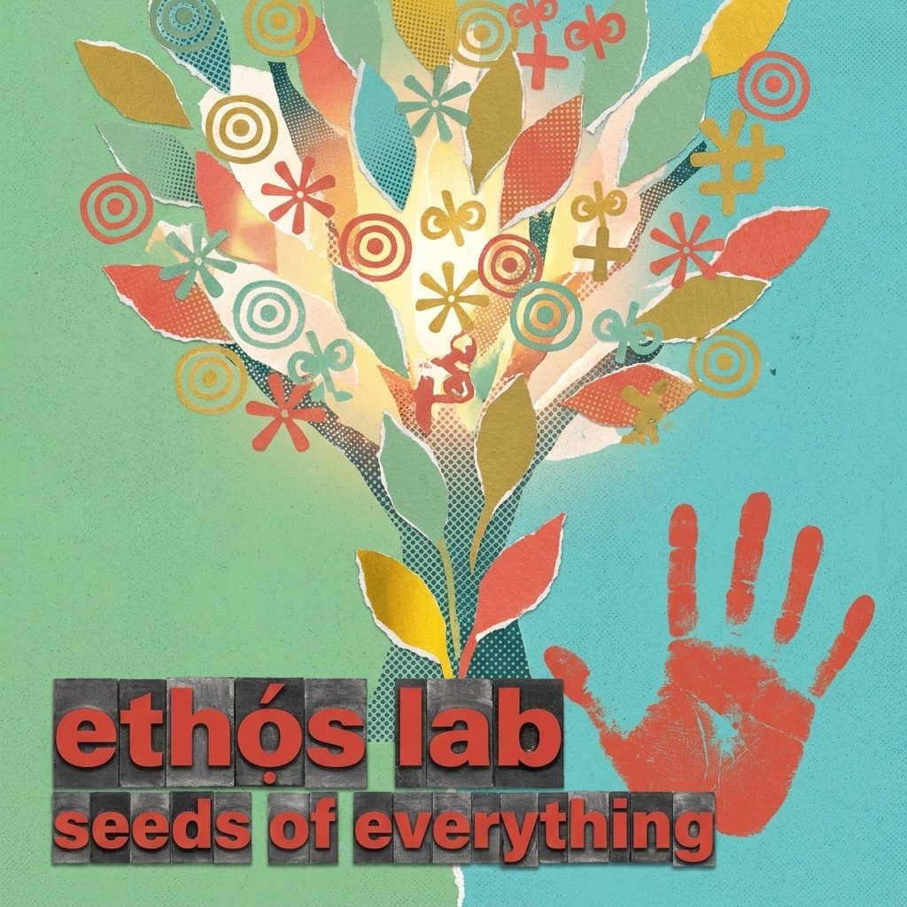
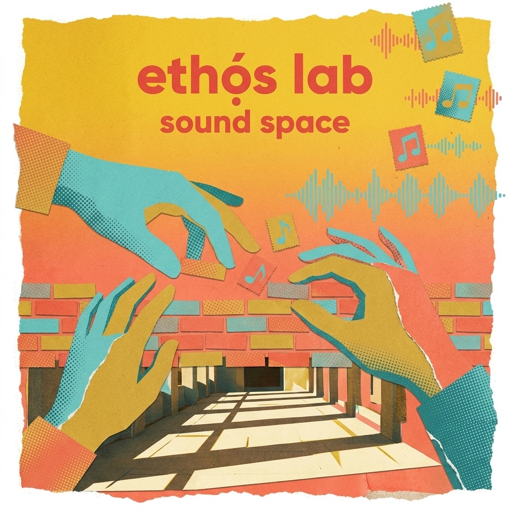
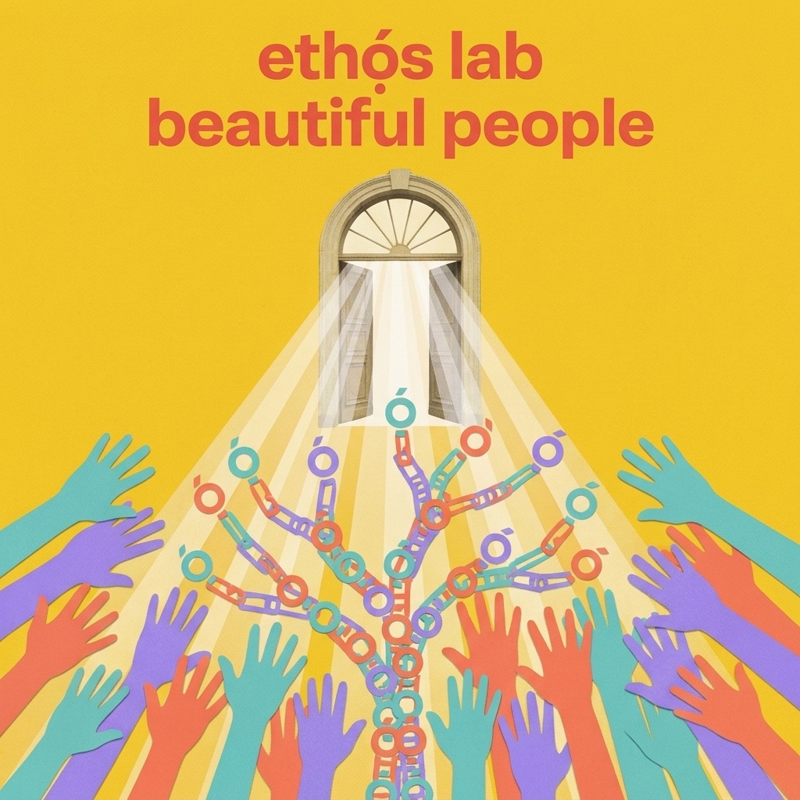

I set up a booth at the Ethọ́s Lab open house and asked people for one true thing.
That was the whole pitch. Sit down, tell me something real, and you walk away with a song built out of it. Eleven people called my bluff. By the time the sun went down we had eleven finished songs and a record called Block Party 2026. You can press play on the whole thing here, and yes, the little ETHọ́S·FM player is as fun as it looks.
People keep asking me about the machine. How did the AI do that. The machine is the least interesting part of this story. Here is the part that actually matters.
The person is the hero. The technology is never the hero. Everything else is just production notes.
Somebody sat down. I asked a few questions and shut up. The job was to catch the one line that was already theirs, the thing they said without reaching for it. Then the lyrics got written in the Ethọ́s house voice, I built the music from a genre instead of from a stolen artist's name, generated the track in Suno, and only after a clear yes did the song go on the record.
No focus group. No brand brief. No room full of people deciding what a stranger's life should sound like. One booth, one afternoon, and a line of people willing to be honest in public.
The genres went everywhere, because the people did. Ghanaian highlife. Afro-soul. Caribbean soca over a reggae spine. Deep vocal house. An indie-folk singalong. A cottage-core chanson in French. A lazy nineties summer rap. The record does not sound like a brand. It sounds like the room.
Every track hangs off one real line from one real person. That was the rule, and the rule is the whole craft.
Chris flew in from Accra and fell for the city nobody hypes:
Nobody talks about Vancouver, but there's a lot of cool things going on. People should take notice.
So he got highlife with a talking drum in it. Bobby has been a youth worker, a father, an activist, and once upon a time an opener for the Rascalz. He handed me the thesis of the whole day without trying:
You don't eat until they do. You open the doors for them.
Bobby
So he got a deep-house floor with no borders on it. Maurice came to tech late and is holding the door open early for his kid, with soca and steel pan carrying the whole thing. Dale teaches graphic design in a Hawaiian shirt and told me to stay open in the age of synthetic everything, so he got a campfire singalong that argues the realest thing we have is where we begin. And Anthonia Ogundele, the one who built the room, closed the record:
We are all uniquely gifted to do something in this moment. So just do it.
That one became a gospel-soul finale with a full choir. Tap any cover to hear where it came from.






Two of the voices belong to kids. Aster is fourteen and told the truth about being scared to go and going anyway. Caleb beat the game in the lab and graduated elementary the same week. They are on the record first name only, by design, and not one pixel or note of them went anywhere without a guardian saying yes first.
Here is the question worth asking, and almost nobody asks it. Not how the AI worked. How the consent worked.
Nothing public without a yes. Minors first name only, faces never. The tech carried the songs through the door. The people are the reason there were songs.
I built every style from genre, not from cloning a named artist, so nobody's voice got stolen and no living musician got cosplayed. No culture got worn as a costume. The day after the party, on June 14, we cleared every track one human at a time. The photos on the site literally say "not ai" on them, because the music is synthetic and the people are not, and I am not going to let those two facts get blurred to make the tech look cleverer than it is.
This is the same posture I bring to all of it, from Punk Rock AI to the BC + AI community. Use the tools, keep your hands on the wheel, give people back to themselves bigger than you found them.
I spent the whole day holding the mic for everybody else. Then the day mugged me on the way out.
I was leaving, fried and grinning, and somebody in the parking garage had a dead battery. Ribbon skirt, stranded under the fluorescent buzz. I had cables in the back. You give a stranger a jump and somehow you are the one who drives off revived. That became the last track on the record, a dirty little slow jam called Meta Angel in da Parking Lot, and the line I kept is mine:
I was exactly where I was supposed to be, doing exactly what I was supposed to do.
Kris Krüg
Eleven hours of chasing other people's signal, and the last one was mine, on level P1, with cables in my hand. I did not have to chase it. For once I was just standing in it.
Start with the album. Loud. The ETHọ́S·FM player earns the click on its own.
This is one of a handful of things I am building right now where the human stays in charge of the magic. If you want the rest of the map:
Bring both hands. Keep your taste on. Do not let the machine have the last word.
Produced by Kris Krüg for Ethọ́s Lab and the BC + AI ecosystem. Eleven voices, June 13, 2026. Every consent cleared June 14, 2026.